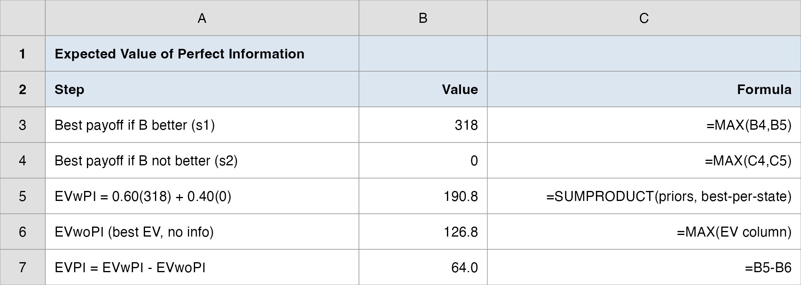
Decision Analysis
Earlier in our work with Vungle — the mobile ad-tech startup that earns revenue when viewers install an advertised app — we tested whether their new ad-serving algorithm B beat the incumbent A.
The verdict: B’s daily eRPM (revenue per 1,000 impressions) ran about $0.11 higher than A’s, and a paired test said that lift was real (\(t = 3.33\)), worth roughly $26.5K/month at June’s traffic.
But statistics told us what is true and how sure we are. They did not tell management what to do.
Today we put on the manager’s hat: given that uncertainty, what is the right action?
“Algorithm B looks better — but we’re not certain. Do we roll out B to all traffic now, keep A and play it safe, or run a bigger test before committing? Quantify it and make the call.”
Rolling out B and being wrong degrades all of Vungle’s revenue — not a 1/16 slice. Keeping A forgoes a real upside. Testing more costs time and money.
How today’s studio runs: I demo each tool on a textbook anchor → your team builds the Vungle rollout tree (one sprint) → we debrief the recommendation together.
By the end of class, your team makes the call — with the decision math to back it up.
Every tool today maps onto the Vungle rollout:
| The managerial question | The tool |
|---|---|
| What are my options, and what could happen? | Payoff table (alternatives × states) |
| What’s the sequence of choice and chance? | Decision tree |
| Which option is best on average? | Expected value (EV) |
| What is it worth to remove the uncertainty? | EVPI / EVSI |
| Would the call change if I’m a bit off? | Sensitivity analysis |
Before any number, decision analysis forces three clean lists:
The discipline is in the structuring: most bad business decisions come from a missing alternative or an unstated state of nature, not from arithmetic.
The whole apparatus — payoff tables, trees, EV — is just bookkeeping on top of these three lists.
Decision alternatives (what Vungle controls):
States of nature (the uncertainty management faces):
These two states are mutually exclusive and exhaustive: exactly one is true, we just don’t know which.
Payoffs come next — and we’ll build them from the data we already have.
We don’t invent payoffs — we anchor them in the eRPM evidence:
| If we roll out B and… | Annual payoff ($K) | Reasoning |
|---|---|---|
| \(s_1\): B is truly better | +318 | full lift across all traffic |
| \(s_2\): B is not better | −160 | degraded revenue vs. a working algorithm |
Keep A is the baseline: $0 in both states (no gain, no loss).
(The −160 is management’s estimate of the downside of replacing a working algorithm with a worse one — about half the upside. We’ll stress-test it later.)
The payoff table is the whole problem on one page — rows are alternatives, columns are states of nature:
| Decision alternative | \(s_1\): B truly better | \(s_2\): B not better |
|---|---|---|
| \(d_1\): Roll out B now | +$318K | −$160K |
| \(d_2\): Keep A | $0 | $0 |
Read a cell as: “if I choose this row and that state occurs, this is what I get.”
A payoff table with no probabilities supports only crude rules (best-case, worst-case). To do better, we need the odds on the states — that is the next ingredient.
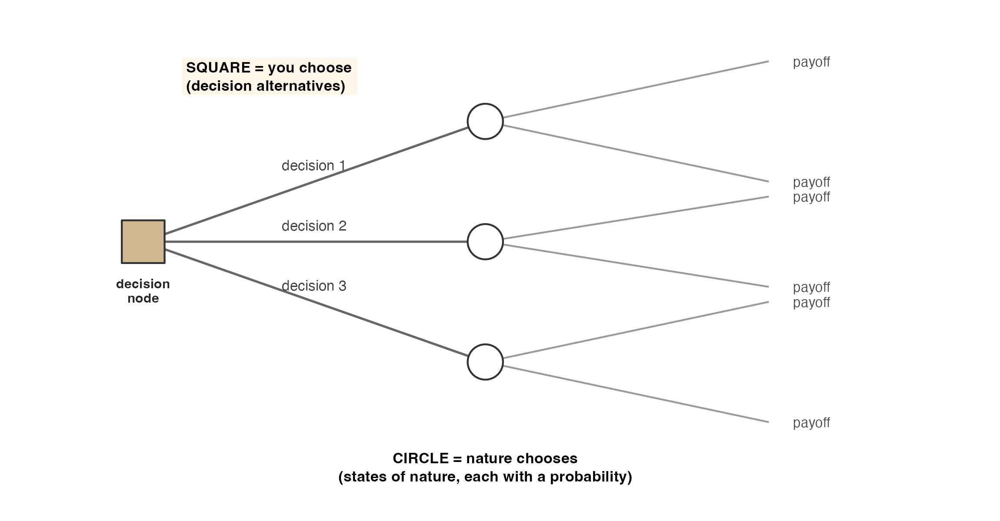
\[ P(s_j) \geq 0 \quad\text{for all } j, \qquad \sum_{j=1}^{N} P(s_j) = 1 \]
Vungle’s data-science team, having seen the encouraging A/B signal, assigns a prior:
These can come from the classical, relative-frequency, or subjective method. Here they are an informed subjective judgment — and we will test how much they matter at the end.
\[ EV(d_i) = \sum_{j=1}^{N} P(s_j)\, V_{ij} \]
where \(V_{ij}\) is the payoff for alternative \(d_i\) under state \(s_j\), and \(N\) is the number of states.
The decision rule: choose the alternative with the best EV (highest for profit, lowest for cost).
In Excel, one formula does it: =SUMPRODUCT(probabilities, payoff_row).
Burger Prince is choosing a restaurant layout. Demand could be 80, 100, or 120 customers/hour, with probabilities 0.4, 0.2, 0.4. Profit ($):
| Model | \(s_1{=}80\) (0.4) | \(s_2{=}100\) (0.2) | \(s_3{=}120\) (0.4) | EV |
|---|---|---|---|---|
| A | 10,000 | 15,000 | 14,000 | $12,600 |
| B | 8,000 | 18,000 | 12,000 | $11,600 |
| C | 6,000 | 16,000 | 21,000 | $14,000 ✅ |
\[ EV(\text{C}) = 0.4(6{,}000) + 0.2(16{,}000) + 0.4(21{,}000) = \$14{,}000 \]
Decision: Model C has the highest EV → choose Model C. (We’ll reuse this example for EVPI and Bayes.)
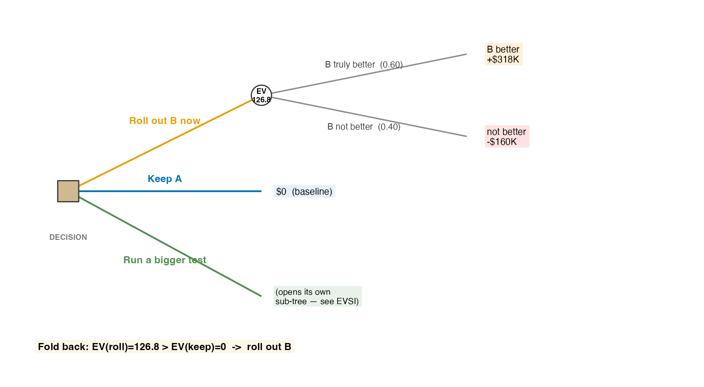
Using priors \(P(s_1)=0.60\), \(P(s_2)=0.40\):
\[ EV(\text{Roll out B}) = 0.60(318) + 0.40(-160) = 190.8 - 64.0 = \mathbf{\$126.8K} \]
\[ EV(\text{Keep A}) = 0.60(0) + 0.40(0) = \mathbf{\$0} \]
Decision rule: $126.8K > $0 → roll out B.
The expected payoff is positive because the upside (+318) is large and fairly likely (0.60), even though the downside (−160) is real.
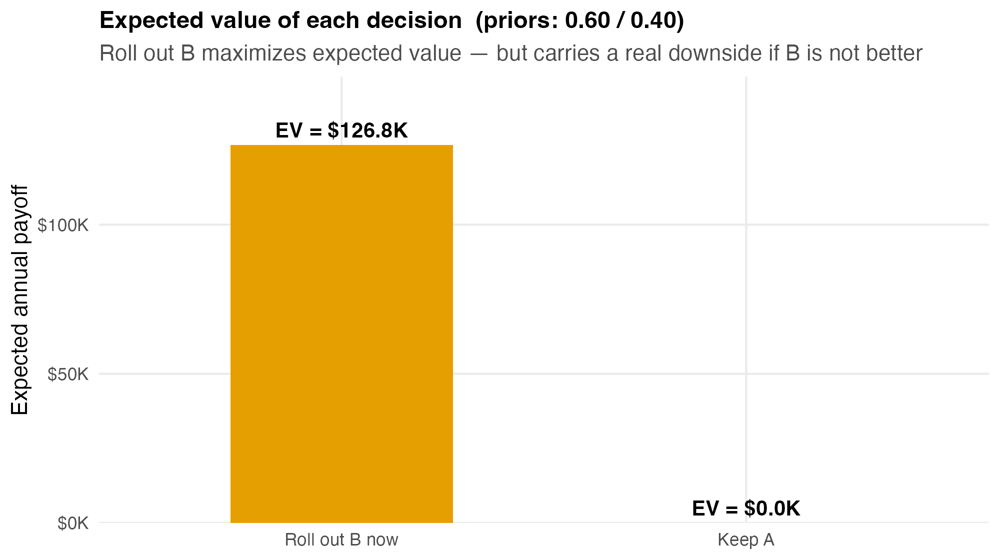
EV is a long-run average, not a guaranteed outcome. If Vungle faced this exact decision many times, “roll out B” would net +$126.8K per decision on average.
The actual result will be either +$318K or −$160K — never $126.8K. The expected value is a ranking device, not a forecast of what happens this once.
This is exactly why managers also ask: what would it be worth to know the true state before deciding? That question has a precise answer — EVPI.
Imagine a perfect oracle who tells you the true state before you decide. How much is that worth?
EVwPI (expected value with perfect information): for each state, take the best payoff you’d choose if you knew that state, then weight by the priors.
EVPI is the gain over deciding blind:
\[ \text{EVPI} = \lvert\, \text{EVwPI} - \text{EVwoPI} \,\rvert \]
where EVwoPI is the best EV without information — what we just computed ($126.8K).
EVPI is an upper bound on the value of any study, survey, or test: no information can beat perfect information.
Step 1 — best payoff in each state (look down each column of the payoff table):
| State | Best choice if you knew | Best payoff |
|---|---|---|
| \(s_1\): B truly better (0.60) | Roll out B | +$318K |
| \(s_2\): B not better (0.40) | Keep A | $0 |
Step 2 — expected value of those best returns:
\[ \text{EVwPI} = 0.60(318) + 0.40(0) = \$190.8\text{K} \]
Step 3 — subtract the best EV without information:
\[ \text{EVPI} = 190.8 - 126.8 = \mathbf{\$64K} \]
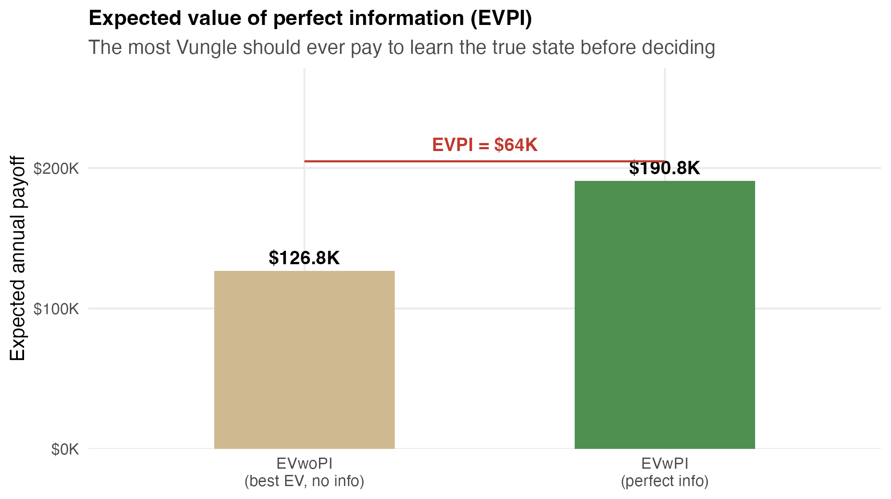
Three labeled cells on top of the payoff table:
=MAX(...) down each column=SUMPRODUCT(priors, best-per-state)EVwPI − EVwoPIEVPI is always ≥ 0: information can’t hurt you (you can ignore it).

Vungle’s real third option, \(d_3\), is to buy information — run a larger, longer A/B test before committing.
A test is imperfect (sample) information: it returns a signal, not the truth.
The signal is reliable but not perfect. Suppose the test’s track record gives the conditional probabilities:
\[ P(F \mid s_1) = 0.80, \qquad P(F \mid s_2) = 0.25 \]
\[ P(s_j \mid \text{signal}) = \frac{P(s_j)\,P(\text{signal}\mid s_j)}{\sum_k P(s_k)\,P(\text{signal}\mid s_k)} \]
This is Bayes’ theorem — the same updating logic from earlier in the course, now feeding a decision tree.
A simple tabular layout does the arithmetic: prior → joint → marginal → posterior. The posteriors become the branch probabilities on the tree after the test.
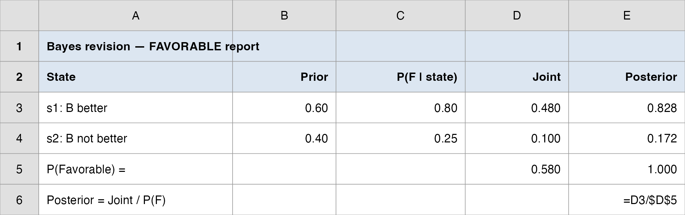
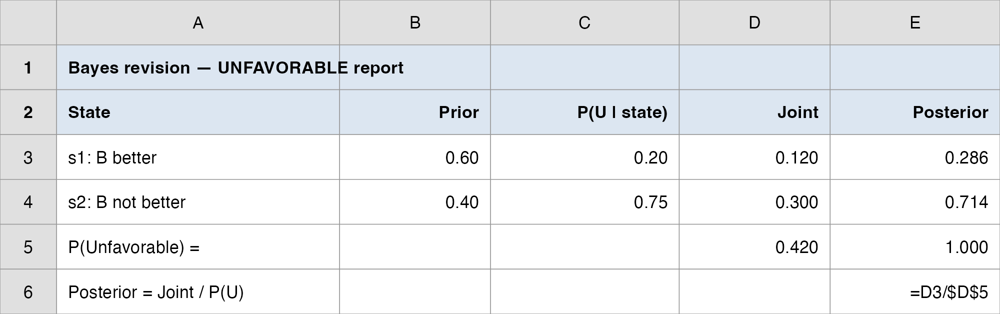
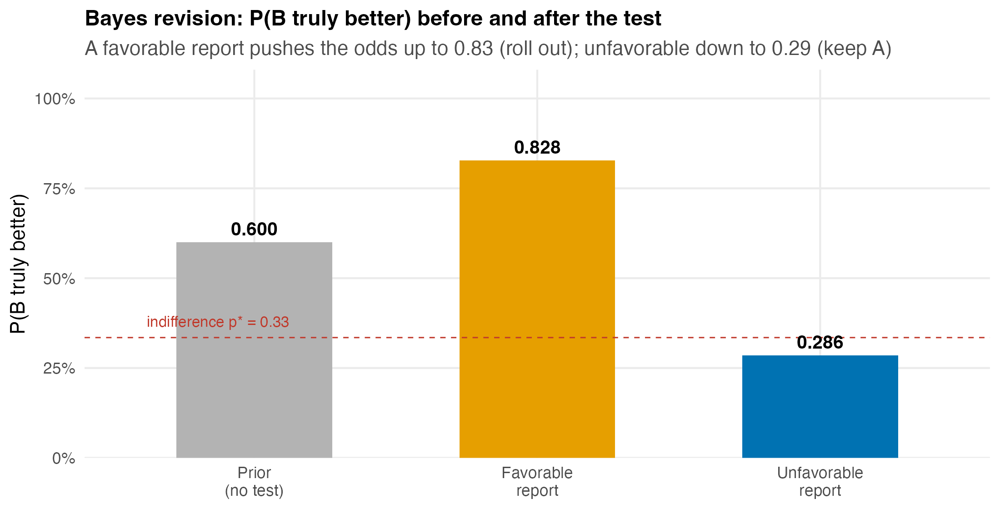
\[ \text{EVSI} = \lvert\, \text{EVwSI} - \text{EVwoSI} \,\rvert \]
\[ \text{EVwSI} = P(F)\,(235.6) + P(U)\,(0) = 0.58(235.6) + 0.42(0) = \$136.6\text{K} \]
\[ \text{EVSI} = 136.6 - 126.8 = \mathbf{\$9.84K} \]
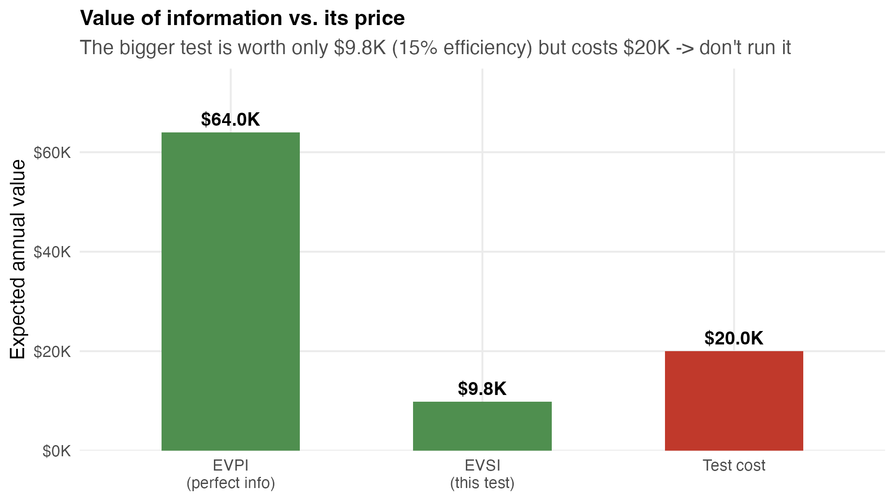
Build it from the Bayes tables:
SUMPRODUCT(P(signal), best-EV)EVwSI − EVwoSIIf EVSI < cost → skip the study and decide now.
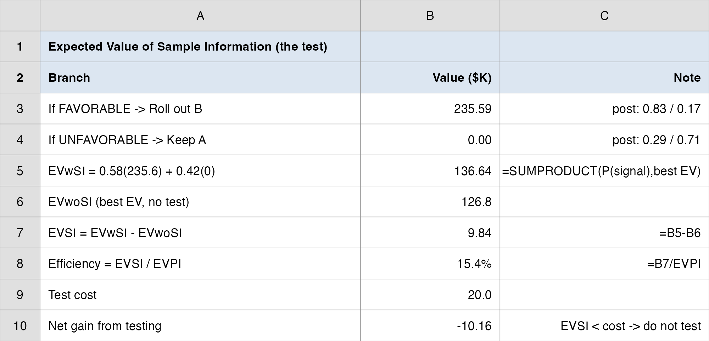
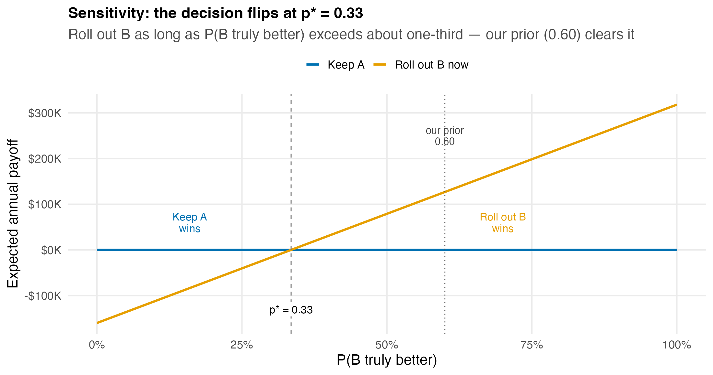
\[ p(318) + (1-p)(-160) = 0 \;\Longrightarrow\; p^{*} = \frac{160}{318 + 160} \approx 0.335 \]
A robust decision is one that stays the same under small changes in the inputs. Here, B would have to be more likely wrong than right before we’d keep A.
This is the real payoff of structuring the decision: we now know not just what to do, but how sure we’d have to be to change our minds. In Excel: a What-If Data Table varying \(p\) traces the whole line.
Decide: roll out B now, keep A, or run a bigger test? Recommend with the numbers.
Data: data/vungle_decision_analysis.xlsx (payoff table + priors + Bayes tables) · Time: ~20 min
=SUMPRODUCT (priors 0.60 / 0.40).Hand in (1 slide): your recommendation — the call · the EV · the one caveat (and: should Vungle buy the bigger test?).
| Question | Tool | Answer |
|---|---|---|
| Best option on average? | EV | Roll out B ($126.8K vs. $0) |
| Worth knowing the truth for sure? | EVPI | $64K ceiling |
| Worth running a bigger test? | EVSI | $9.84K < $20K cost → no |
| Robust to our prior? | Sensitivity | flips only below \(p^{*} = 0.33\) |
This is the division of labor that runs through the whole course:
The test result was an input to the decision, not the decision itself. The paired \(t\) said “the lift is real”; the EV said “and acting on it is worth +$126.8K.”
A good analyst can do both — and knows which question they’re answering.
One sentence: Structuring the rollout as a decision — alternatives, states, payoffs — says roll out B, because its expected value ($126.8K/yr) beats keeping A, and a further test isn’t worth its cost.
One number to remember: EVPI = $64K — the ceiling on what any information is worth here; the actual test cleared only $9.84K of it.
One caveat: EV is a long-run average. “Roll out B” still risks a −$160K year — sensitivity shows the call is robust (flips only below \(p^{*} = 0.33\)), but the downside is real, so monitor and stay ready to revert.
Some key takeaways from this session:
Your client (homework): frame one real decision in your team’s case as a decision problem — list the alternatives, the states of nature, and a payoff table. Assign priors, compute EV, and find EVPI. State the recommendation and the tipping-point prior.
Next time: we return to the inference arc — modeling uncertain counts (how many installs tomorrow?) with discrete probability distributions, the raw material that priors and payoffs are built from.
Business Analytics